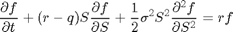
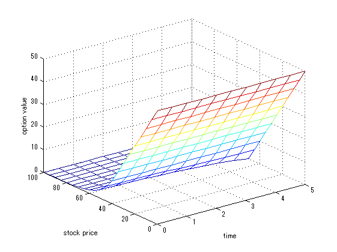

Contents
clear;
Problem Description
% Example 21.1 American put option is_american = 1; % is_american = 0; S0 = 50; K = 50; r = 0.10; sig = 0.40; T = 0.4167; q = 0.0;
Governing Equation
We solve the Black-Sholes with dividend:

sig2 = sig^2; option_value = @(s) max(K - s, 0); Smin = 0; Smax = 100; dS = 5; % dS = 0.1; Ss = (Smin:dS:Smax)'; nmonth = 5; dmonth = 0.5; % dmonth = 0.1; dt = dmonth * (1/12); Ts = (0:dmonth:nmonth)'; N = length(Ts) - 1; M = length(Ss) - 1; fs = zeros(M+1, N+1); % set boundary values fs(:,N+1) = option_value(Ss); fs(1,:) = option_value(Smin); fs(M+1,:) = option_value(Smax); for i = N:-1:1 % mat = zeros(M-1, M-1); mat = []; rhs = zeros(M-1, 1); for j = 2:M jj = j - 1; jj2 = jj^2; aa = 0.5*(r-q)*jj*dt - 0.5*sig2*jj2*dt; bb = 1 + sig2*jj2*dt + r*dt; cc = -0.5*(r-q)*jj*dt - 0.5*sig2*jj2*dt; rr = fs(j,i+1); if (jj-1 == 0) rr = rr - aa * fs(j-1,i); else % mat(jj,jj-1) = aa; mat(end+1,:) = [jj,jj-1, aa]; end % mat(jj,jj) = bb; mat(end+1,:) = [jj,jj, bb]; if (jj+1 == M) rr = rr - cc * fs(j+1,i); else % mat(jj,jj+1) = cc; mat(end+1,:) = [jj,jj+1, cc]; end rhs(jj) = rr; end % mat = sparse(mat); mat = sparse(mat(:,1), mat(:,2), mat(:,3), M-1,M-1); sol = mat \ rhs; fs(2:M,i) = sol; % the following limiter is to ensure optimal early exercise % consider K=50, S=40, f=9.8 < K-S = 10, then the option should be exercised % thus its current value should be K-S=10, not f=9.8 % in other words, the solved value should limited with max(K-S, f) if (is_american) fs(:,i) = max(K-Ss, fs(:,i)); end end % round to 0.01 precision fs = round(fs./0.01) .* 0.01; disp(['S0=', num2str(S0), ' value=', num2str(fs(find(Ss==S0),1))]); % fs = flipud(fs); figure; mesh(Ts,Ss, fs); xlabel('time'); ylabel('stock price'); zlabel('option value');
S0=50 value=4.07